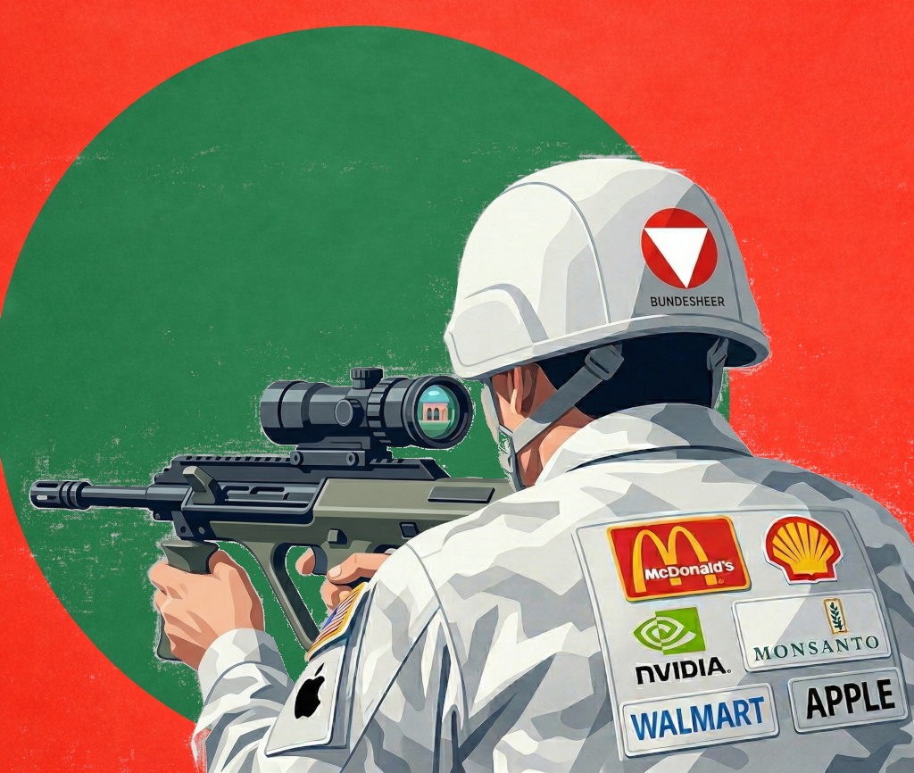
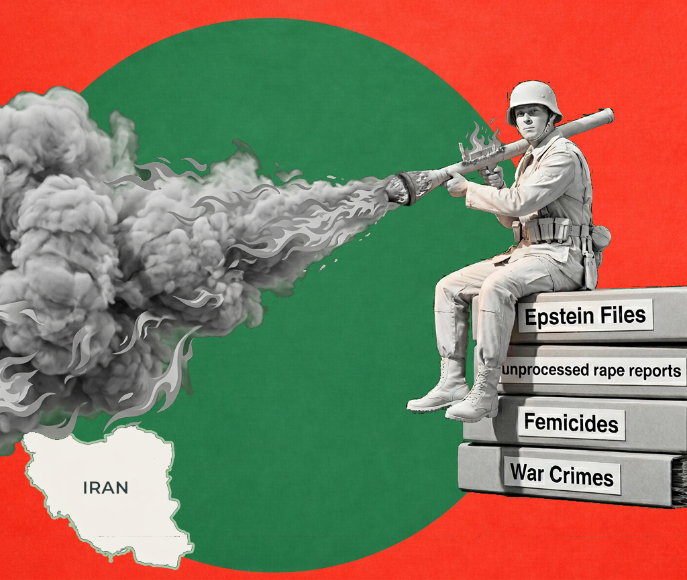
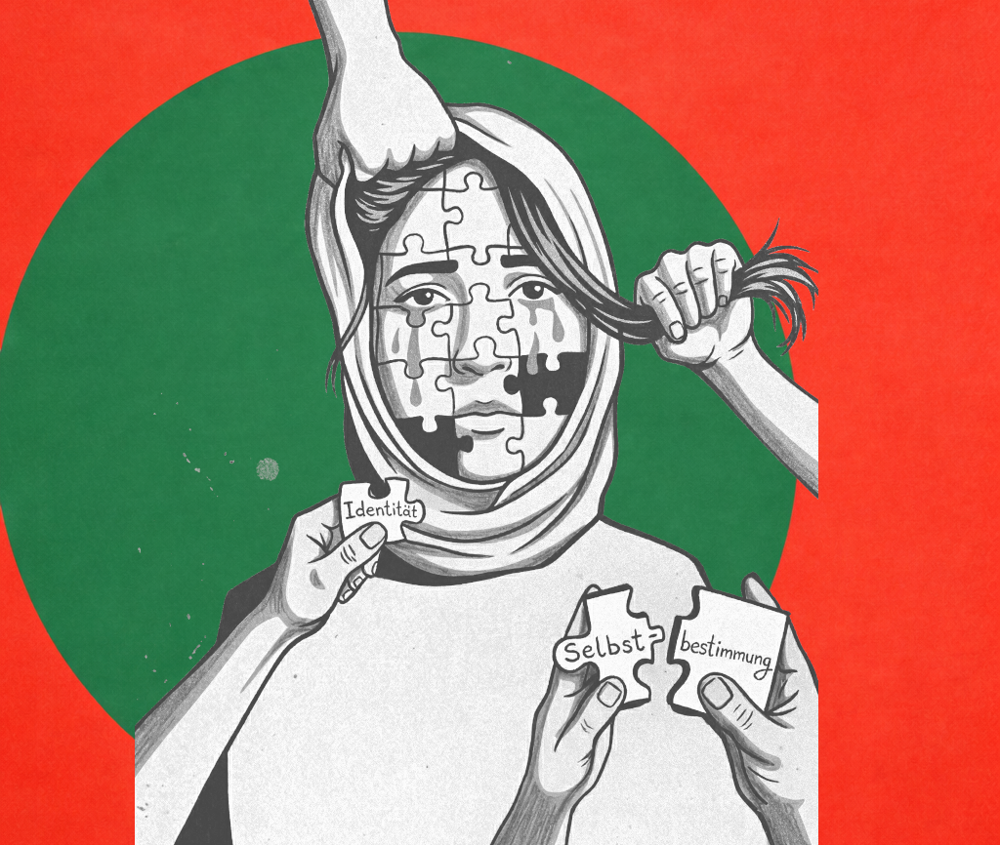

Warum wir kandidieren
Immer mehr Menschen merken: So wie Politik gerade läuft, kann es nicht weitergehen. Viele Probleme werden größer statt kleiner – egal, welche Partei gerade an der Macht ist. Das liegt nicht nur an Entscheidungen, sondern daran, dass das ganze System an seine Grenzen stößt.
✹ Kernthemen

Völkerrecht

Imperialismus

Kopftuchverbot
∞ Weitere Grundsätze
🔍 Repression gegen Systemkritik – auch in Graz
Überwachung, Kontosperrungen, Hausdurchsuchungen – der Staat schränkt Palästinasolidarität ein. Der Beschluss gegen BDS & Anti-Zionismus ist ein Angriff auf die Meinungsfreiheit. Wir fordern die sofortige Aufhebung dieser undemokratischen Maßnahmen. Solidarität mit allen politisch Verfolgten.
📰 Medien & Wahrheit – Die vierte Gewalt im Gleichschritt
ORF, Krone, Kleine Zeitung: Systematische Israelfreundlichkeit, asymmetrische Sprache – Terror vs. Präventivschlag. Die Liste GAZA bricht das Schweigen und liefert antiimperialistische Analyse. Wir brauchen eine Medienpolitik, die nicht der Staatsräson folgt.
⚡ Anti-Zionismus ≠ Antisemitismus – sondern Anti-Rassismus
Zionismus ist eine rassistische Siedlerideologie. Anti-Zionismus bedeutet Eintreten für gleiche Rechte für Palästinenser:innen und Jüd:innen. Viele jüdische Stimmen unterstützen das. Wir sagen:„From the river to the sea, Palestine will be free“ ist keine Hassrede, sondern eine Vision der Gerechtigkeit.
🧱 Apartheidstaat Israel – Schluss mit Rassismus & Völkermord
Menschenrechtsorganisationen wie Amnesty nennen Israel Apartheid. Die Mauer, Siedlungen, Todesstrafe für Palästinenser:innen – das ist Faschismus pur. Wir kämpfen für Waffenembargo, Sanktionen und Solidarität mit dem palästinensischen Widerstand.
✊ Nie wieder Faschismus! Keine Komplizenschaft mit Genozid
Österreich schweigt zu 100.000+ Toten in Gaza, liefert Motoren für Drohnen, feiert israelische „Selbstverteidigung“. Historische Verantwortung verpflichtet zum Handeln: Israel sanktionieren, Assoziationsabkommen aussetzen. Nie wieder ist für alle – für Jüd:innen, Palästinenser:innen und alle Unterdrückten.